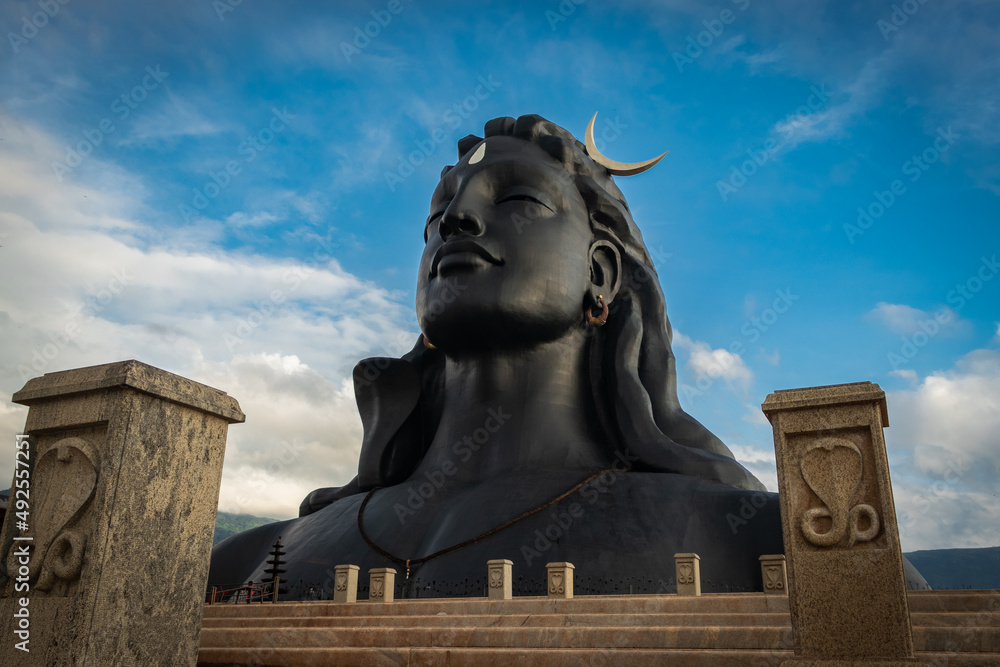

The Adiyogi Shiva bust is a 34-metre tall (112 ft), 45-metre long (147 ft) and 25-metre wide (82 ft) steel bust of Shiva with Thirunamam at Coimbatore, Tamil Nadu. It is recognized by the Guinness World Records as the "Largest Bust Sculpture” in the world.[1][2] Designed by Sadhguru, the founder and head of the Isha Foundation, the statue weighs around 500 tonnes (490 long tons; 550 short tons).[3] Adiyogi refers to Shiva (Shankara) as the first yogi.[4] It was established to inspire people towards inner well-being through yoga. Description "This face is not a deity or temple, this is an iconic inspiration. In pursuit of the divine, you don't have to look up because it is not somewhere else. Each of the 112 possibilities is a method to experience the divine within you. You just have to pick one. [...] The idea is not to build one more monument but to use it as a galvanizing force towards self-transformation." Sadhguru on the purpose of the statue.[5] Adiyogi is located at the Isha Yoga Centre. Its height, 112 ft, symbolizes the 112 possibilities to attain to moksha (liberation) that are mentioned in yogic culture, and also the 112 chakras in the human system.[5][3] A linga named Yogeshwar Linga was consecrated and placed in front of the statue.[6] The Indian Ministry of Tourism has included the statue in its official Incredible India tourism campaign.[7] It is also the venue of a light and sound show about Shiva as a yogi, inaugurated by the President of India, Ram Nath Kovind.
